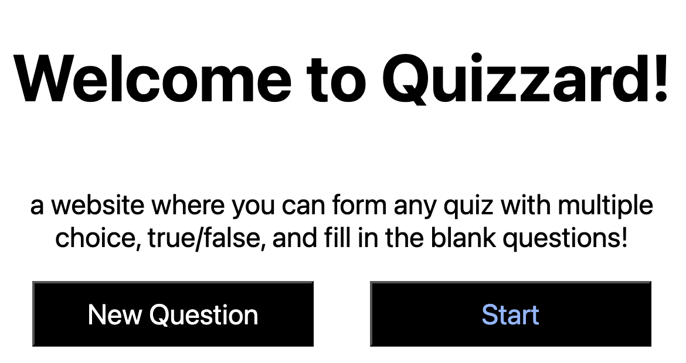

Guide
Making the quiz
To make a new quiz, start off by pressing the "new question" button. This generates a question, allowing you to fill in the details.
You can fill in the name of the question and select the type. The 3 types are multiple choice, true/false, and fill in the blanks. You may generate as many questions as you want. If you create a new question by mistake, just press undo.
Multiple choice
For a multiple choice question, you must fill in 4 options. One of them being the right answer, and the other 3 being wrong answers. When you are done, press the generate question button.
True or false
For a true or false question, you must press the true button to indicate the answer is true or the false button to indicate the answer is false. If you press true by mistake or false by mistake, just press the other button to change it. Then press the generate question button when the question is ready.
Fill in the blank
For a fill in the blank question, the name of the question must include a "_" character. For example, if you type in a question like "What's 1 + 1?", you will get a pop up message invalidating the question. However, if you type in "1 + _ = 2", then it would work. You also have to fill in the right answer. Once all fields are filled, press generate question.
Editing and deleting questions
To edit a question, press the edit button after the question has been generated. This will allow you to edit the name of the question as well as other details such as the correct answer. When you are finished, press the "save changes button". To delete a question, simply press the "delete" button after the question has been created.
How to save quizzes
To save a quiz, press the "Export as CSV" button when you are finished the quiz. This allows you to save the quiz in a CSV file. Then, you can import the quiz with the "choose file" button under the import quiz from CSV header. When you choose the CSV file of your quiz, all the questions will be added for you. This allows you to save quizzes rather than constantly having to remake them.
Taking the quiz
To take the quiz, press the "start" button.
Each question will be shuffled in a random order. Select/type your answer, then press the "next" or "submit" button to move on to the next question.
For a true/false or multiple choice question, you can press on which answer you think is correct. You can change your answer by selecting a different one. When you press "next" or "submit", your answer is locked in and you can't go back and change it, so be absolutely sure of your answer before you move on.
For a fill in the blank question, type your answer in the input box then press "next" or "submit".
When the quiz is over, you can see your final score. It also shows each question, whether you got them right or wrong, and shows you the correct answer to each question you got incorrect. Afterwards, you have 3 options. You may start the quiz over from the beginning by pressing the start over button, go back to the make quiz screen to edit your quiz by pressing the edit quiz button, or make a new quiz by pressing the new quiz button.
Keyboard shortcuts
During the quiz, there are keyboard navigation shortcuts that make it easier. For true/false questions, press "1" for true and "2" for false. For multiple choice questions, press "1" for the first option, "2" for the 2nd option, "3" for the 3rd option, and "4" for the 4th option. Press enter to move on to the next question.
Dark mode
To turn on dark mode, press the "dark mode" button in the nav.
This changes the colors to make the colors darker.
To revert back to normal, press the "light mode" button in the nav.
Color blind mode
To activate color blind mode, press the "color blind mode" option in the nav.
This will underline all buttons when you hover over them, making the site more accessible for color blind people.
Adjusting fonts
To adjust the font size, the + and - options are here to make the fonts smaller or bigger. + makes things bigger and - makes things smaller.